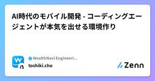
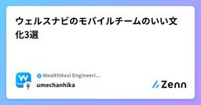

WealthNavi Engineering Blogのフィード
https://zenn.dev/p/wn_engineering
ウェルスナビの開発に関する記事を定期的に発信しています。 「ものづくりする金融機関」への取り組みを知っていただければ幸いです。
フィード

AI時代のモバイル開発 - コーディングエージェントが本気を出せる環境作り 2
2
WealthNavi Engineering Blogのフィード
はじめにこんにちは、iOSエンジニアの長です。現在、ウェルスナビのモバイルアプリ開発では、コーディングエージェントを活用しています。この記事では、AI時代におけるモバイル開発の新たな挑戦と、コーディングエージェントが最大限に力を発揮できる環境作りについて共有します。 1. エージェント導入前の状況コーディングエージェント（以下、エージェント）は大変便利です。一方で、既存の開発環境が「エージェント向き」ではないと、良さが出にくいと感じました。私たちの開発で影響が大きかったのは、次の3点です。 巨大で複雑なコードベースアプリは長年の開発の積み重ねで、大規模で複雑なコ...
4日前

ウェルスナビのモバイルチームのいい文化3選
WealthNavi Engineering Blogのフィード
はじめにみなさん、こんにちは。ウェルスナビでAndroidエンジニアを担当している梅津です。こちらの記事はモバイル特集の最初の記事として、これから紹介される各メンバーの具体的な取り組みに先立ち、ウェルスナビのモバイルチームが作り上げている文化をご紹介することを目的としています。個々の技術選定や開発プロセスの背景にある「文化」を知っていただくことで、後続の記事をより立体的に読んでいただければと思います。ここで言う「文化」とは、金融という制約の強い業界の中でも各メンバーの裁量を大きくしつつ事業やサービスとしての品質を落とさずにプロダクトを顧客へ届けるための考え方や価値基準のこと...
6日前

「モバイル開発のすべて」特集始まります！
WealthNavi Engineering Blogのフィード
はじめにみなさん、こんにちは！ウェルスナビで技術広報をしている安田です。ウェルスナビのモバイルアプリの開発現場を知ってもらうために、3月のブログ企画として 「モバイル開発のすべて」 特集を開催します！ 企画概要ウェルスナビの運用者数 45万人（2026年1月時点） のうち、8割がモバイルアプリユーザー ということをご存知でしょうか？ある意味お客様と最も近い場所にあり、施策がダイレクトに響きやすいのがモバイルアプリなのです。そんな利用者の多いアプリを開発しているメンバーたちが、それぞれ日々の業務で培った知見や取り組んできたプロジェクトについて記事に書いてくれることになり...
10日前
PlaywrightをRPAツールとして活用し、事務作業の効率化と安定化を成功させた話
WealthNavi Engineering Blogのフィード
こんにちは、QAの木下です。この記事では、事務作業にRPAツールを導入し、業務の改善に成功した話について、紹介します。 RPA挑戦のきっかけ ソフトウェアテストの自動化で得た知見ウェルスナビのQAチームは、Webサイトやモバイルアプリの品質を保証すべく、テストの計画から分析、設計、実装、実行、完了まで一通りのテスト活動を行っています。またテスト活動の中で、手作業で行っていたテスト実行を自動化し、テスト実行の効率化とともに品質の向上に努めています。特にWebサイトのテスト自動化では、非常に安定かつ高速、低コストにテストを実行できる環境を構築した結果、迅速にWebサイトの欠陥...
15日前
WireMockを使用した外部接続APIのモック化
WealthNavi Engineering Blogのフィード
はじめにこんにちは、WealthNaviでバックエンドエンジニアを担当しているかるかんです。今回は、外部接続APIをWireMockでモック化した際の備忘録をまとめます。 概要参加しているプロジェクトで、他社が提供するAPI（以下、外部接続APIと呼称）を呼び出す機能の開発がありました。しかし、その外部接続APIはプロダクトの制約上、開発中に自由に呼び出すことができませんでした。しかも、そのAPIは以下のような挙動をしたため、開発中になるべく実際のレスポンスに近いモックサーバーの作成をする必要がありました。・リクエスト項目が複数あり、その組み合わせでレスポンスのパター...
1ヶ月前
システム部門における技術広報の役割
WealthNavi Engineering Blogのフィード
!この記事はウェルスナビアドベントカレンダー2025の記事です。 はじめにみなさん、こんにちは。ウェルスナビのCTOの保科です。ウェルスナビでは、2023年（今から2年半ほど前）に、システム部門の組織力強化のためにエンジニアリングエンゲージメントというチームを設立し、そのチームの活動の一部として技術広報を始め、現在も継続をしています。アドベントカレンダーの最後の記事として、この機会に、ウェルスナビの技術広報を、どういった目的で、どのような考え方で実施しているのかを説明します。現在、技術広報に関わっている方、今後技術広報に力を入れようとしている方の参考になればと思います。...
2ヶ月前
おにいさんエンジニアが見てきたレビュー文化の進化史
WealthNavi Engineering Blogのフィード
!【この記事はウェルスナビアドベントカレンダー2025の記事です】 📝 はじめにこんにちは。ウェルスナビでバックエンド開発をしている、おじ・・おにいさんエンジニア横田です。今日はちょっと特別な日──自分の誕生日なので、重い腰をあげて筆を取ることにしました。毎年プレゼントはクリスマス、誕生日合わせて1つだったな。と切ない思い出を噛み締めながらこの記事を書いています。若い頃は「新しいフレームワークを覚えること」が楽しかったのですが、最近は「どうやって人と一緒に開発するか」に興味があります。せっかくの誕生日なので、これまでのエンジニア人生を振り返りつつ、レビュー文化の進化...
2ヶ月前
SREチームにKiroを導入した話
WealthNavi Engineering Blogのフィード
!【この記事はウェルスナビアドベントカレンダー2025の記事です】今回は、ウェルスナビのSREが在籍しているシステム基盤チーム（以下、SREチーム）にKiroを導入した経緯やユースケースについて紹介します。私は今年の2025年7月にSREチームに配属され、普段はAIOpsの推進や新規プロダクトのインフラ構築、既存運用プラットフォームの改善などを行なっており、KiroをAIOps推進の一環として導入しました。 対象読者GitHub Copilot（以下、Copilot）をすでに導入されている方SREチームでのKiroのユースケースを知りたい方 Copilotでいいの...
2ヶ月前
開発組織の成長を促進するEEチームの2025年
WealthNavi Engineering Blogのフィード
!この記事はウェルスナビアドベントカレンダー2025の記事です。 はじめにみなさん、こんにちは！ウェルスナビでEngineering Engagementチーム（以降、EEチーム）に所属しているShoheiです。EEチームの紹介は後ほど書かせていただくとして、1年を締めくくる良い機会なので2025年の開発組織と我がEEチームの成長についてまとめていきたいと思います。本アドベントカレンダー企画では開発メンバー各位が個人の業務軸で記事をまとめていますが、私は開発組織で横断的に業務を進める立場として、読者の皆様にウェルスナビの開発組織に対する理解を深めていただけたらと考えていま...
2ヶ月前
独自アーキテクチャとウェルスナビのiOSアプリ開発の工夫に迫る！
WealthNavi Engineering Blogのフィード
はじめにこんにちは、サービス機能開発チーム・iOSエンジニアの深来です！2025年3月に入社し、iOSアプリの開発やテックブログの運営をしています。外部登壇で質問していただいた内容を元に、ウェルスナビの独自アーキテクチャであるVCASアーキテクチャとウェルスナビのiOS開発の工夫について紹介していきます。 VCASアーキテクチャとはVCASアーキテクチャは、ReduxやTCAのような単方向データフローのアーキテクチャです。View, Command, Action, Stateで構成され、その頭文字をとってVCASアーキテクチャと命名されました。UIKit版のVCAS...
2ヶ月前
Spring Data JPAのsaveAllはなぜ遅い？ IDENTITY戦略の罠とJdbcTemplateによる高速化
WealthNavi Engineering Blogのフィード
!【この記事はウェルスナビアドベントカレンダー2025の記事です】 はじめにこんにちは。金融システム開発というチームに所属し、バックエンド開発を担当している中村です。私は、2025年4月に新卒としてウェルスナビに入社し、現在は主に社内業務システムの開発に携わっています。この記事では、新卒研修を終え、初めて本格的な機能開発に携わる中で直面した「大量データ挿入時のパフォーマンス課題」について書きます。便利なフレームワークの裏側で何が起きているのかを深く理解するきっかけとなったこの経験と、原因調査から JdbcTemplate を使った解決に至るまでの学びをまとめます。 直面...
3ヶ月前
新卒がウェルスナビの実務で得た学びと成長
WealthNavi Engineering Blogのフィード
!【この記事はウェルスナビアドベントカレンダー2025の記事です】 はじめにこんにちは。今年、2025年に新卒で入社したバックエンドエンジニアの高橋です。本記事では、実務経験のない新卒エンジニアが新規プロダクト開発に携わり、実務を経験することで得られた学びと成長について共有したいと思います。 前提私は現在、0⇒1の新規プロダクト開発に携わっています。学生時代の私は、実務インターンなどの経験はなく、個人開発でSpringBootやReact.jsの基礎を勉強していました。この経験と新卒入社後の研修を経て、CRUD操作をひと通り含むような基礎的なアプリなら作れるというレベル...
3ヶ月前
企業でのシステム開発と個人開発の違い 〜「なぜ？」「本当に？」を突き詰める〜
WealthNavi Engineering Blogのフィード
!【この記事はウェルスナビアドベントカレンダー2025の記事です】 はじめに初めまして！ 今年4月に新卒としてウェルスナビに入社しました、佐藤です。本記事では、私が企業でのシステム開発を経験して感じた個人開発との違いについて、実際のシステム開発の流れを交えながら説明します。これからエンジニアを志す方々に、企業でのシステム開発の雰囲気や、今からでもできることについて、少しでも学びになれば幸いです。 対象読者企業でのシステム開発がどんな感じなのか気になる、という方自分が作るプログラムがいつもバグだらけ、もっとちゃんとしたプログラムを作りたい！ という方 企業で...
3ヶ月前
仕事は自分ひとりでやらない 〜PdM経験から得た協働の3つの考え方〜
WealthNavi Engineering Blogのフィード
はじめに!【この記事はウェルスナビアドベントカレンダー2025の記事です】みなさん、こんにちは。ウェルスナビでAndroidエンジニアを担当している梅津です。前職ではエンジニア、ウェルスナビ入社後はプロダクトマネージャー(以下、PdM)を経て再びエンジニアに戻りました。この記事では、「仕事は自分ひとりでやらなきゃ」と抱え込んでいた私が、「仕事は自分ひとりでやらない」とチームで協働するマインドに変わるきっかけとなった考え方を共有します。テックブログではありますが、テック系の職種に限らずチームで働くすべての人に役立つ考え方だと思っておりますので、様々な職種で同じ悩みを持つ方...
3ヶ月前
PlaywrightでQA作業を効率化した3つの方法
WealthNavi Engineering Blogのフィード
!【この記事はウェルスナビアドベントカレンダー2025の記事です】初めましてQA奥山ですAIによるコード自動生成やアジャイル開発の加速でQA作業がボトルネックとなっていませんか？そんな課題を感じている方に向けてPlaywrightを活用した効率化の方法を3つ紹介します (1) Figmaで作られた画面仕様書とコーディング実装されたWeb画面をPlaywrightで文言比較と画像比較する方法 目的試験時の確認数（サイト数×ページ数×画面要素=1,000項目以上）が膨大となり、人による目視だとヒューマンエラーが発生する可能性が高い状況を取り除くため、Playwirhgtを...
3ヶ月前
相続対応事務改善プロジェクトを例とした、ウェルスナビ金融オペレーション改善
WealthNavi Engineering Blogのフィード
!【この記事はウェルスナビアドベントカレンダー2025の記事です】こんにちは。ウェルスナビでバックエンドエンジニアをしている香川です。金融システム開発チームというチームに所属し、金融事務、カスタマーサポート部門が使用するバックオフィスシステムを主に担当しています。この記事では2025年に行なった相続対応事務改善プロジェクトを例に、弊社の金融オペレーション改善対応を紹介したいと思います。業務改善プロジェクトで格闘中の方々に気づきを提供できたり、弊社へのジョインをご検討の方が仕事をイメージする手助けとなればと思います。話の前提として弊社ウェルスナビの話をさせてください。一般的...
3ヶ月前
StepCIを使ってSaaSのAPIを利用するAPIサーバーのE2Eテストやってみた
WealthNavi Engineering Blogのフィード
!【この記事はウェルスナビアドベントカレンダー2025の記事です】 はじめにこんにちは、ソフトウェアエンジニアリングチームの山川です。2025年4月にウェルスナビへ新卒入社し、主にID認証基盤（以降、ID基盤）チームで「ウェルスナビID」の運用や新規機能の開発に従事しています。https://note.com/wealthnavi_hr/n/n323875e0c7a0この記事では、SaaSが提供するAPI（以降「SaaS API」）を呼び出す必要がある内部APIに対して、CI上で安全に実行できるE2EテストをStepCIで実装した事例を紹介します。 対象読者CIで...
3ヶ月前
Spring/Javaにおけるイベント駆動システムのインテグレーションテスト手法
WealthNavi Engineering Blogのフィード
!【この記事はウェルスナビアドベントカレンダー2025の記事です】 はじめにウェルスナビ株式会社でID基盤の開発・運用を担当している雨森と申します。弊社ID基盤の一部ではイベント駆動アーキテクチャを採用しています。本記事では、その開発・運用の中で得た知見をもとに、SpringとJavaを用いたイベント駆動システムにおけるインテグレーションテストの実装方法を解説します。なお、今回はすぐに使える「構築手順」にフォーカスするため、インテグレーションテストの意義や採用ライブラリの深い解説については割愛します。 イベント駆動システムのテストについて同期的に動くシステムに比べ、イ...
3ヶ月前
プルリク承認時にCIを回そうとしたら予期せぬバグに遭遇した話
WealthNavi Engineering Blogのフィード
!【この記事はウェルスナビアドベントカレンダー2025の記事です】 はじめにこんにちは、ソフトウェアエンジニアリングチームの秦野です。2025年4月に新卒でウェルスナビに入社し、現在は技術負債の解消やバックエンド開発に携わっています。今回は開発プロセスにおけるGitHub Actionsコスト削減のため、プルリクエスト(以降、PR)承認時にCIを回そうとした結果、遭遇したバグとその解決方法について紹介します。https://docs.github.com/en/actions 対象読者GitHub ActionsのCI設計や運用に携わっている方特にCI実行タイミ...
3ヶ月前
CloudNative Days Winter 2025 に参加してきました
WealthNavi Engineering Blogのフィード
!【この記事はウェルスナビアドベントカレンダー2025の記事です】 はじめにこんにちは、システム基盤チームでSREをしている安藤と申します。新規プロダクトのインフラ構築、開発者プラットフォーム改善、社内向けAIサービスの構築やAIを活用した業務改善に取り組んでいます。今回は11/18（火） ~ 19（水）にかけて開催されたCloudNative Days Winter 2025の1日目に参加してきましたので、その参加レポートとなります。 CloudNative Daysとは？CloudNative Days はコミュニティ、企業、技術者が一堂に会し、クラウドネイティブ...
3ヶ月前